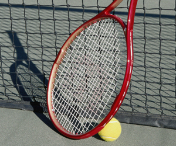

3 Tennis Drills to Practice Without a Court
In This Article: Swing Practice Serving Ball Toss Volley to Volley
Finding an open tennis court isn't always easy. Maybe you show up and find no court available or the courts are wet from the rain. Tennis video games with motion sensors may not be the answer. Here are three off-court tennis skill drills to keep you competitive.
Swing Practice
With your racket, go to an open area (ideally in front of a mirror), and practice your swing. Go through each motion slowly, focusing on the technical points of the ground stroke. Make sure your feet are properly aligned and that you transfer your weight correctly as you prepare your backhand.
Serving Ball Toss
Find a place with a hard surface and ample room to toss the tennis ball in the air, either inside or out. You won’t need a racket. Just mimic the entire serving motion. Your footwork, body alignment, and concentration should mirror that of a competitive match. Bounce the ball a few times before you toss it up, and pretend that there’s an opponent awaiting your serve. Place a piece of tape on the ground for a baseline, which will help you align your feet.
Volley to Volley
This drill can be done on any surface. You’ll need a partner with a tennis racket. Start around ten feet away from your partner and try for ten consecutive hits. Next, try for ten all-forehand volleys, then switch to all-backhand volleys. Now you’re ready for ten crisscross volleys, alternating shots to forehand and backhands. Finally, try the advancing volley, where you both take a small step closer with each hit.
Related Categories